A few things to begin with...
- Labs start next week (week of Sept. 21)
- Don't forget to bring $10 for the lab fee
- My office hours are Monday 11:30 - 1:00 and Wednesdays 11:30 - 1:00 in Hutt Rm. 346 (jlindsay@uoguelph.ca)
GEOG*2420
The Earth From Space
The History of Earth Imaging
John Lindsay
Fall 2015
Readings
JR Jensen Chapter 3
Where are we today?
- The state of Earth imaging today has resulted from a remarkable
level of advancement in many fields
- Photographic imaging
- Digital imaging
- Human flight
- Rocket science and space exploration
- Computing technology
- And many, many others!
Early Advances in Photography
- 1826: Joseph N. Niepce obtained the first recorded photograph
- 1839 Louis Daguerre (pronounced Dagair) introduced the ‘daguerreotype’ a.k.a. ‘tintype’
- Disadvantages of the tintype:
- long exposure times
- no way to reproduce images
- dangerous chemicals used in film processing
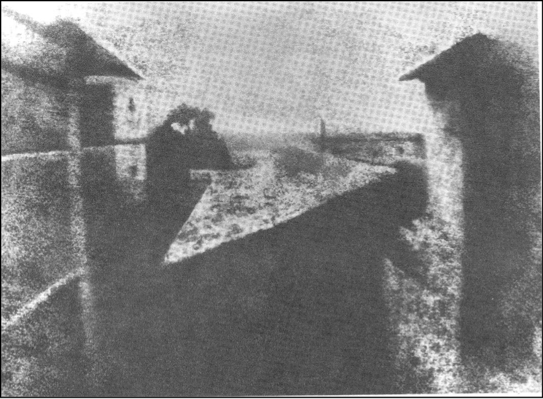
1826: First photographic image by Joseph Niepce of his estate courtyard, Paris.
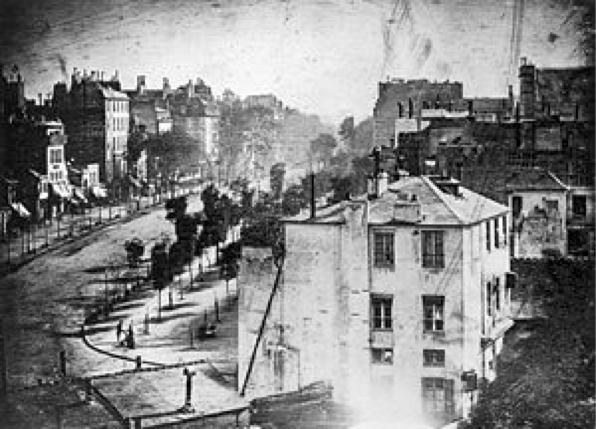
1838: Daguerre’s photograph of a busy street in Paris, mid-day. Where are all the people?
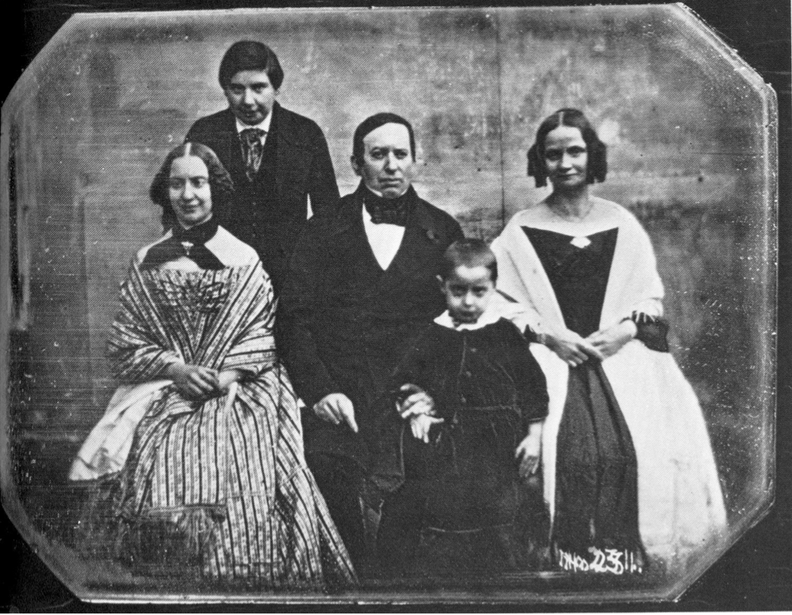
1850: Louis Daguerre family portrait
Further advances in photography
- 1841 Talbot's calotype process produced an image using paper negatives.
- 1851 Frederick Archer’s wet-plate process used glass plates.
- 1871 Richard Maddox invented dry plates using flexible gelatin-based emulsion.
- 1885 George Eastman introduced celluloid roll film.
- 1888 Eastman's portable Kodak camera introduced.
Early experiments in aerial photography and mapping
- 1858 Gaspard-Felix Tournachon (Nadar) took the first aerial photograph from a balloon.
- 1860 Joseph W. Black took the first air photo of North America (Boston) from a balloon.
- 1886 Canadian E.G.D. Deville maps from terrestrial photographs. Publishes
Photographic Surveying in 1889.
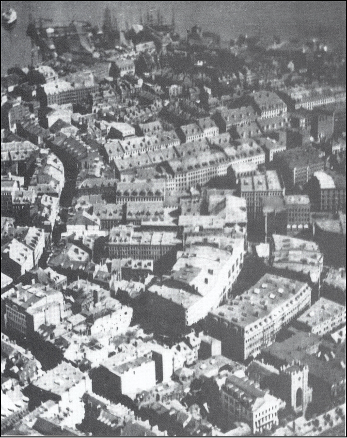
1860: Air photo of Boston, taken from a balloon by James W. Black
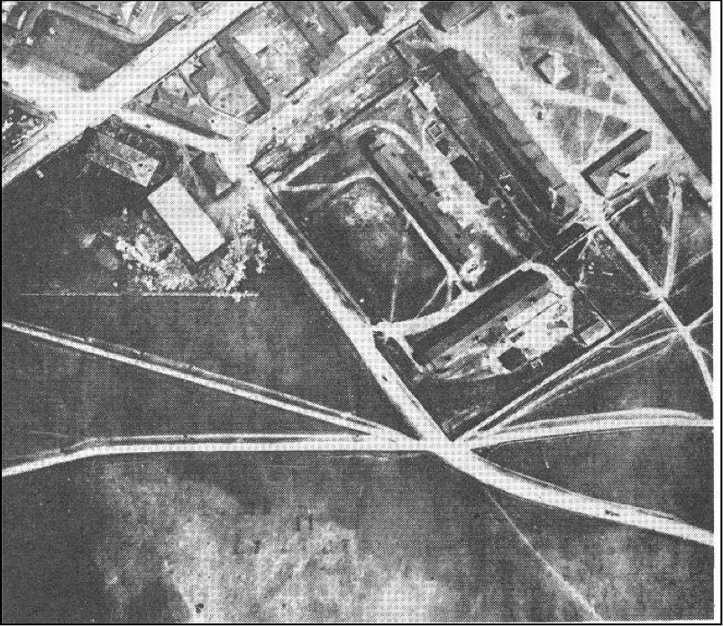
1883: First recorded air photo in Canada, of the Halifax Citadel, taken from a balloon.
The golden era of aerial photography
- Air photos became a mainstay of earth observation from the 1930s to
the 1970s
- Used extensively for topographic mapping applications, forestry, mineral
exploration, agricultural status, urban development, disaster assessment,
and reconnaissance.
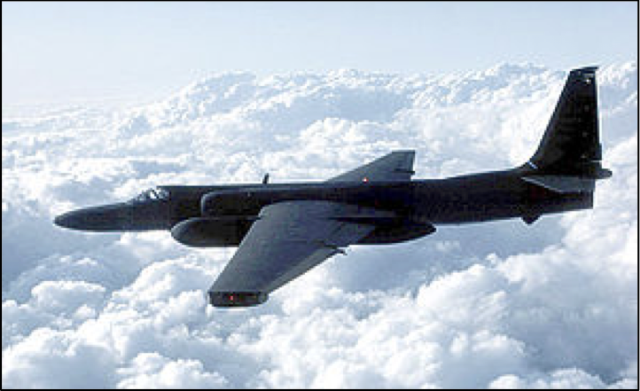
Lockheed U-2 spy plane
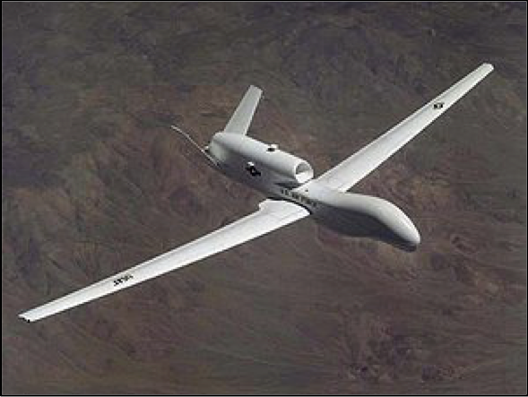
RQ-4 Global Hawk, unmanned aerial vehicle (UAV)
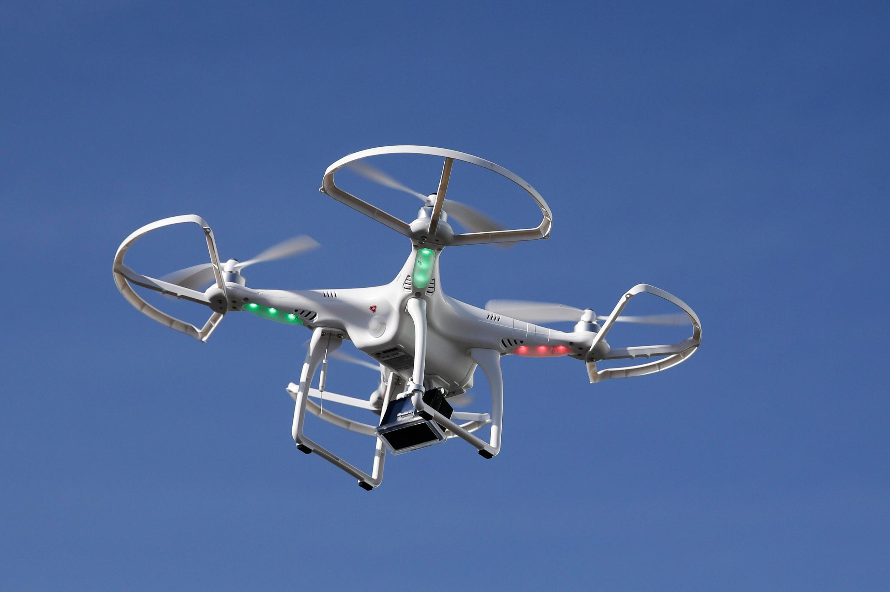
Modern commercial unmanned aerial vehicle (UAV)
| 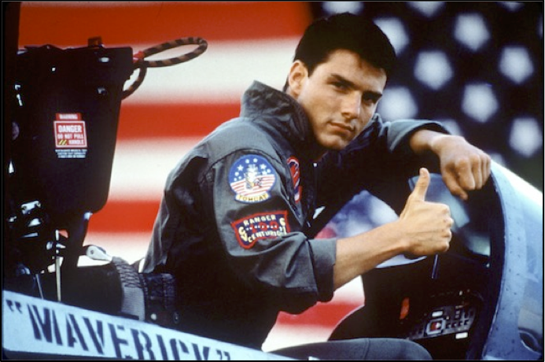 |
|
| A dinosaur of the past? |
The future? |
Disadvantages to air photos
- Impractical for covering large areas at once
- prohibitively expensive for large areas
- Repeat coverage of large areas are therefore too costly for most applications
- Individual photos suffer tonal variations so that combining them as mosaics is often problematic
The era of the �Earth-observation satellite
- Satellite images can:
- Cover large areas in a single image
- Image the entire globe
- Carry out repeat coverage with ease
| 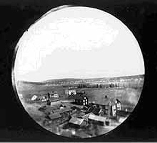 |
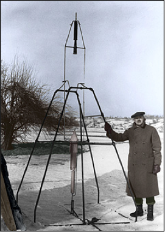 |
| Alfred Nobel (1897): First image taken from a rocket |
Robert Goddard (1926) First liquid-fuel rocket |
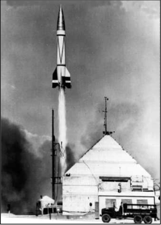
The Americans experimented with the Nazi V-2 rocket design after WWII
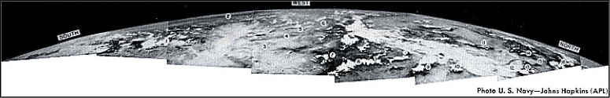
The Cold War contributed greatly to the development of remote sensing
Developments in �imaging technology
- Black & White film
- Infrared film (~1930s & 1940s)
- Colour film in aerial photography (1950s)
- Radar (~1950s)
- 1969 Willard Boyle and George E. Smith invent the CCD
- Multispectral imaging (1960s)
- Hyperspectral imaging (space-based as of 2000)